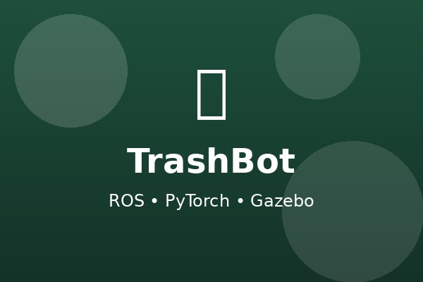
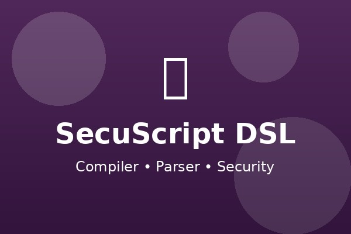
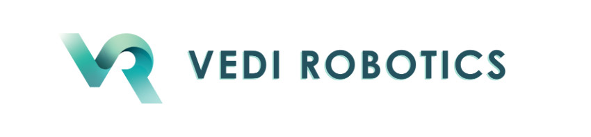
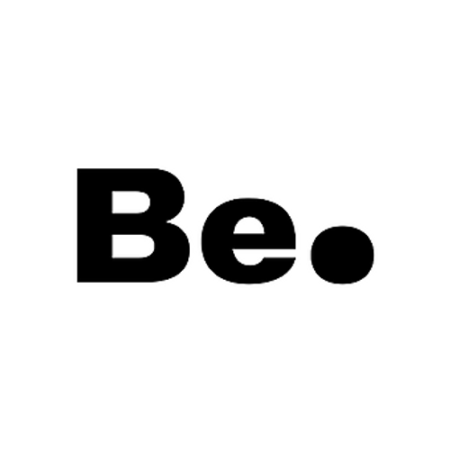

Hi, I’m Mario Cuevas
CS Student & AI Engineer
Architect of scalable AI pipelines in Python & FastAPI.
Cut server costs by 20% and boosted customer retention by 12%.
Tasks Processed / mo
(30 hrs saved/wk)
Server Cost Reduction
Retention Increase
About Me
I’m Mario Cuevas, a junior Computer Science student at Clark Atlanta University (B.S. expected May 2026). I build scalable AI systems with Python, FastAPI, and Docker—reducing server costs, speeding up inference, and driving measurable product wins.
- Founder & AI Engineer, Automeit.ai — orchestrated LangChain agents on Docker; processed 5,000+ tasks/mo, doubled throughput in 2 months, and cut server costs 20% while improving retention 12%.
- Software Engineering Intern, Vedi Robotics — shipped a Flask microservice for a trained NLP model; 35% lower latency; CI/CD with GitHub Actions + Docker cut release effort 75%.
- Data Science Intern, Be.Brooklyn — built an ETL pipeline (Python) that reduced processing time 40%; churn-risk model hit 88% accuracy, lifting retention by 12%.
- Student-Athlete (D1/D2) — Baseball at Coppin State & Clark Atlanta; leadership, discipline, and time-management under pressure.
Stack: Python, FastAPI, Docker, Kubernetes, AWS (SageMaker, Lambda), LangChain & prompt engineering, SQL (PostgreSQL/MySQL), MongoDB, Spark/Kafka, CI/CD (GitHub Actions), Data Structures & Algorithms.
My Services
AI/ML Engineering
Design and deploy ML/NLP services with measurable impact—e.g., -35% latency and +12% retention via practical model + product tuning.
Back-End & MLOps
FastAPI microservices, containerized with Docker, CI/CD via GitHub Actions, and AWS (SageMaker/Lambda) for reliable, repeatable releases.
Automation & AI Agents
LangChain agent orchestration (Automeit.ai) that processes 5k+ tasks/month and saves pilot clients ~30 hours/week.
Data Engineering & Analytics
ETL with Python/Spark/Kafka; production metrics pipelines; churn models (up to 88% accuracy) that inform real business decisions.
Featured Projects
Automeit.ai — Agent Orchestration
Architected a lightweight, Docker-based orchestration system for LangChain agents, processing 5k+ tasks per month and securing 3 pilot clients. Reduced infra costs by 20% and boosted client retention by 12%.
Python • FastAPI • Docker • LangChain TrashBot — Autonomous Robot
Built an end-to-end autonomous garbage collection robot using ROS Noetic and PyTorch CNN for real-time object detection. Implemented visual servoing navigation, state machine coordination, and 3-DOF arm control in Gazebo simulation.
ROS Noetic • PyTorch • Gazebo • OpenCV SecuScript — DSL Compiler
Designed a domain-specific language compiler for security and network operations. Built complete compilation pipeline including lexical analysis, recursive descent parsing, AST generation, and Python code synthesis for network scanning and monitoring.
Python • Compiler Design • AST • SecurityUS Collisions — ML Forecasting
Analyzed 7+ years of US traffic collision data to build predictive models for forecasting collision trends. Applied time series analysis, feature engineering, and machine learning algorithms to identify patterns and risk factors.
Python • scikit-learn • Pandas • Data Science Vedi Robotics — NLP Microservice
Developed a Flask microservice for a trained NLP model served via REST API, cutting inference latency by 35%. Added GitHub Actions CI/CD with Docker for TensorFlow, reducing manual release effort by 75% and enabling reproducible builds.
Flask • TensorFlow • GitHub Actions • AWS Be.Brooklyn — Churn Model
Engineered a predictive churn-risk model with scikit-learn and XGBoost that achieved 88% accuracy. Supported marketing campaigns that lifted retention by 12%. Also built an ETL pipeline that reduced data processing time by 40% and enabled daily dashboards.
Python • XGBoost • ETL • DashboardsSchedule an Appointment
After submitting, I'll receive your request and follow up to confirm.